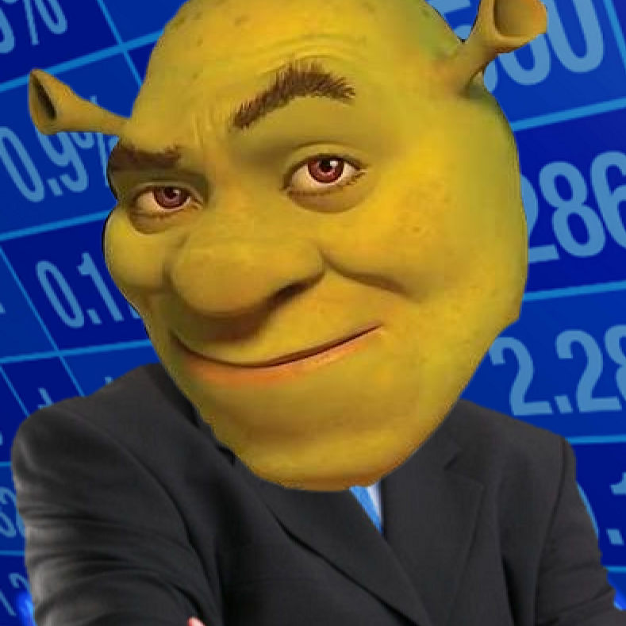

The meme has evolved
SHRONK.
Stonks went ogre mode.
Green face. Business suit. Questionable financial decisions. Meet SHRONK: the meme that wandered out of the swamp and onto the chart.

The lore
Not stonks. SHRONK.
Once upon a time, a certain green businessman discovered stock charts. He didn't understand the numbers. He only understood one thing: the arrow goes up. Thus, SHRONK was born.
01Green energy
The swamp is green. The candles? That's up to the market.
02Maximum meme
No complicated pitch. Just one deeply unserious character.
03Community first
Memes, jokes, and fellow chart watchers welcome.
Getting started
Join the swamp
1. Find the official token
Once live, use the verified contract address shared by the project.
2. Check the details
Verify the chain, fees, and token address before any trade.
3. Meme responsibly
Crypto is volatile. Never invest more than you can afford to lose.